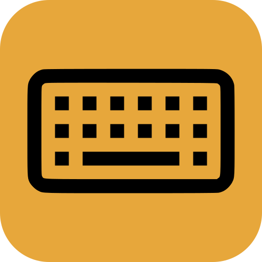
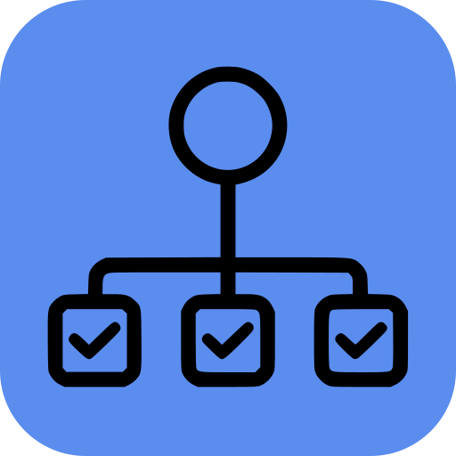

Base de trabalho
HTML com conteúdo editorial e blocos de destaque
A estrutura mistura leitura, navegação e interação para simular decisões comuns em interfaces reais.
Kit de avaliação para o TCC
Esta base foi pensada para que o participante use a extensão, encontre problemas e aplique correções em um fluxo semelhante ao de um projeto real.
Contexto do estudo
O objetivo é avaliar a usabilidade percebida da ferramenta ao apoiar a identificação e correção de problemas de acessibilidade. A página abaixo simula uma interface de produto com navegação, destaques, cards e conteúdo de apoio.
Base de trabalho
HTML com conteúdo editorial e blocos de destaque
A estrutura mistura leitura, navegação e interação para simular decisões comuns em interfaces reais.

Revisão guiada
Fluxo para testar leitura, foco e interação por teclado
Os blocos foram organizados para gerar situações comuns de revisão de acessibilidade em um projeto front-end.
Depoimentos
Produto
Marina, coordenadora de produto
A revisão ficou mais rápida quando consegui comparar a leitura manual com os achados da ferramenta.
Ver observação completaFront-end
João, desenvolvedor sênior
A ferramenta ajudou a enxergar erros que eu já conhecia, mas estava deixando passar.

QA
Camila, analista de testes
O relatório deixou mais claro o que precisava ser corrigido primeiro.
Tarefas
Fazer uma leitura manual da página, da estilização e do código.
Anote os problemas de acessibilidade que você conseguir identificar sem usar a extensão.
Abrir a extensão e comparar os achados.
Use a barra lateral e, se necessário, o relatório exportado para confrontar com a sua lista inicial.
Corrigir os erros com apoio do hover.
Use o feedback do hover, a barra lateral e o relatório exportado para ir entendendo cada achado.
Fazer uma revisão final.
Veja se não ficou nenhum item na tela e anote o que a ferramenta agilizou ou esclareceu.
Dúvidas comuns
Abra o arquivo HTML no VS Code, habilite a extensão e siga os avisos apresentados para corrigir o código.
Sim, desde que a adaptação preserve a leitura, a navegação por teclado e a semântica da marcação.
Além de corrigir os problemas apontados, observe como a ferramenta ajuda a entender os erros e o que ainda gera dúvida.
Encerramento
Finalize a revisão e siga para o questionário
Depois de concluir as tarefas, responda ao questionário do estudo e, em seguida, ao formulário SUS fornecido separadamente.